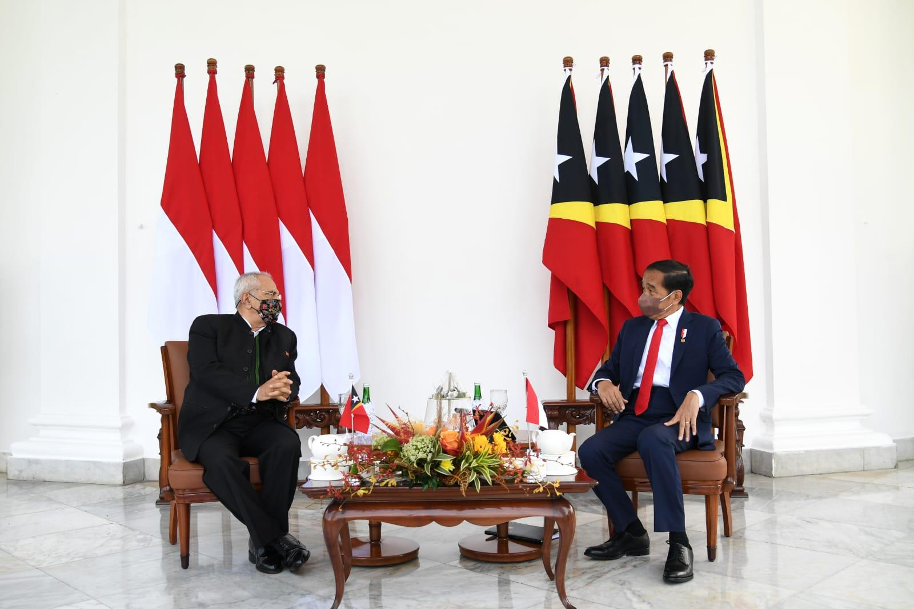
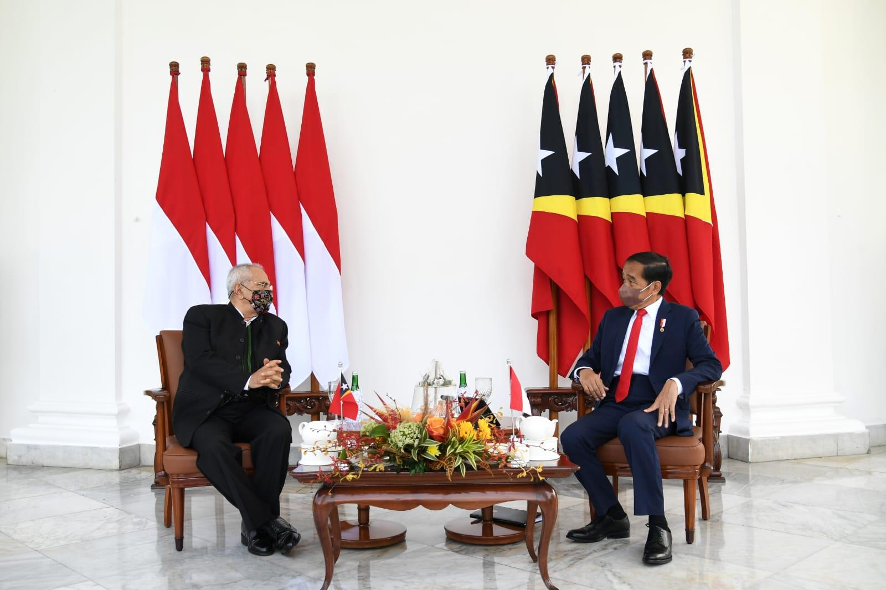

Kerja sama bilateral adalah suatu bentuk hubungan kerja sama yang dijalankan oleh dua negara untuk mencapai tujuan tertentu yang saling menguntungkan. Kerja sama ini biasanya dilakukan karena kedua negara memiliki kepentingan yang sama, sehingga mereka memilih untuk bekerja sama agar lebih efektif dan efisien. Kerja sama ini bersifat lebih fokus dan mendalam dibanding kerja sama multilateral karena hanya melibatkan dua negara.
Kerja sama bilateral ini juga berperan penting dalam membangun hubungan diplomatik yang harmonis, memperkuat kepercayaan antar negara, serta dapat mencapai tujuan pembangunan berkelanjutan. Negara dapat saling mendukung dalam mengatasi masalah yang tidak bisa diselesaikan secara sendirian.
MoU Kesehatan RI–RRT ini adalah perjanjian kerja sama resmi antar pemerintahan Indonesia dengan pemerintahan di Tiongkok. Hal ini dapat saling membantu kedua negara khususnya dalam bidang kesehatan. MoU Kesehatan RI–RRT ini berfungsi sebagai aturan, kesepakatan, dan tujuan bersama, dalam jangka panjang. Indonesia dan Tiongkok bekerja sama untuk pencegahan dan pengendalian penyakit seperti TBC, hepatitis, kanker, diabeter, dan juga penanganan wabah. Mereka juga sering ada pelatihan dokter dan perawat Indonesia, program pertukaran tenaga medis, dan beasiswa pelatihan kesehatan. MoU Kesehatan RI–RRT ini memberikan kesempatan bagi kedua negara untuk bekerja sama dalam pengembangan rumah sakit, peningkatan layanan diagnostik, dan penguatan fasilitas kesehatan. Tujuan utamanya adalah untuk meningkatkan kualitas layanan kesehatan, mendukung riset & inovasi, serta memberikan akses yang lebih besar terhadap obat dan alat medis.